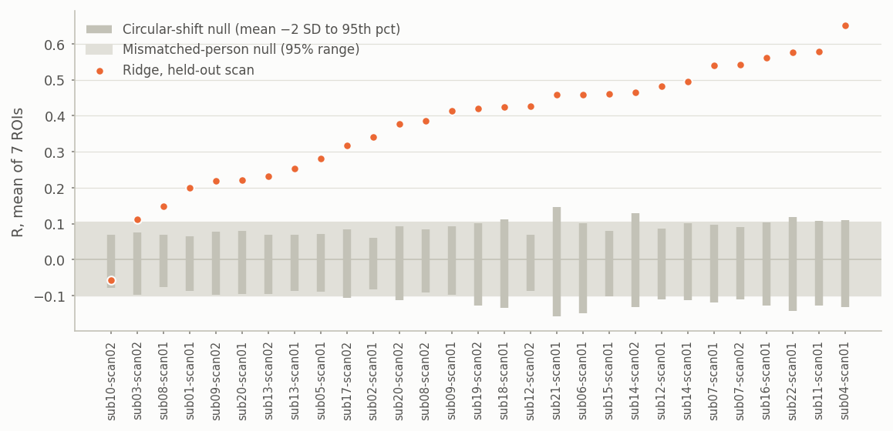
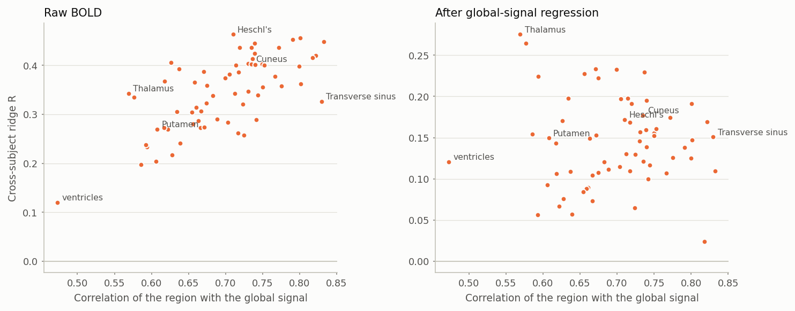
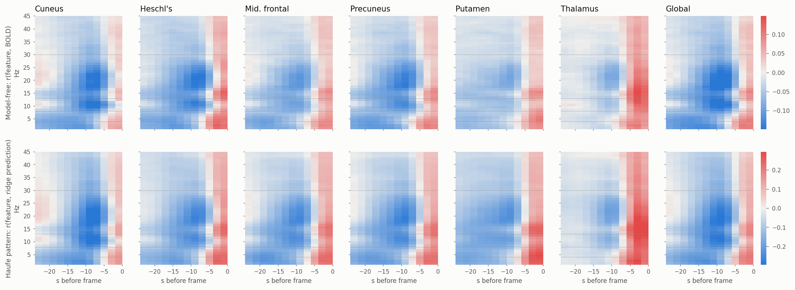
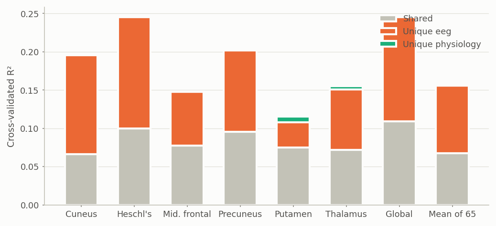

What a year of reproducing and dissecting an EEG-to-fMRI transformer actually taught us, what holds up on a new dataset, a working prototype built on it, and what to do next, written to be learned from and explained to others.
The question. Can scalp EEG, cheap and portable, tell us what deep brain activity measured by fMRI is doing in a person the model has never seen? NeuroBOLT (NeurIPS 2024) said yes, using a pretrained EEG transformer. We reproduced it, then took it apart.
An EEG arousal monitor (section 6): it estimates, every fMRI volume and from EEG alone, the arousal-driven brain-wide BOLD signal and a vigilance trace, flags low-vigilance periods and scores how much arousal moved in a run. PROTO_SUMMARY
Resting-state EEG tells us where a person sits on the arousal axis, delayed by the haemodynamic response, and linear models already read all of it. The ceiling is set by how much arousal varies in a recording and by the diversity of the people and sites in the training data, not by model architecture. The open scientific question, and the publishable one, is the region-specific remainder: what EEG predicts about a brain region once the brain-wide signal is removed.
Two ways of watching the brain. EEG records electrical activity from the scalp with millisecond timing, costs little and fits on a head. fMRI measures the blood-oxygen-level-dependent (BOLD) signal everywhere in the brain, including deep structures such as the thalamus, but needs a scanner, is slow (one image every 2 s) and sees neural activity only through the sluggish blood response. Recording both at once lets us learn the mapping between them.
Why predicting fMRI from EEG would matter. If EEG alone could tell us what deep brain regions are doing, we could monitor them outside the scanner: in sleep labs, at the bedside, during neurofeedback, or over days rather than minutes. The test that matters for those uses is cross-subject: train on some people, predict BOLD in someone new.
What NeuroBOLT claimed. Li et al. (NeurIPS 2024) combined a pretrained EEG foundation model (LaBraM) with a multi-scale spectral branch and reported mean R = 0.473 for seven brain regions in five held-out people. Our project asked whether that holds up, and if so, what the model has learned.
| Stage | What we did | Outcome |
|---|---|---|
| Reproduction | Retrained NeuroBOLT for 7 regions and all 29 scans on M3; scored each held-out scan separately | Cross-subject result reproduced (0.46 vs 0.473); within-scan result did not (0.38 vs 0.53) |
| Hypothesis tests | 33 NeuroBOLT variants, 21 band-power baselines, 5-fold cross-validation over all 22 people | Ridge wins for 19–20 of 22 people; the paper's split is the easiest of five folds |
| Interpretability | Nulls, whole-brain maps, physiology controls, model dissection, nonlinear tests, an interpretable time-series model, personalisation | Section 4: the signal is arousal, read linearly through the haemodynamic delay |
| External validation and prototype | A new site (ds006040, 28 people) and an application | Sections 5 and 6 |
Ten ideas carry every result in this guide. Each comes with why it matters here and the mistake it guards against.
Neurons do not light up fMRI directly. Activity triggers a local blood-flow increase that peaks about 5–6 s later and settles over 15–20 s: the haemodynamic response function (HRF). So BOLD at time t reflects neural activity from roughly t − 4 to t − 12 s. That is why the models look at 24 s of EEG history, and why the most useful EEG is 8–12 s before the frame. The HRF also varies between regions and people by a second or two; a textbook HRF shape fitted to these data loses 40% of the accuracy, so the models learn their own delays.
Raw EEG is summarised by its power at each frequency. In eyes-closed rest, alpha (8–13 Hz) is strong when a person is relaxed but awake; as they drift towards sleep, alpha fades and slower theta (4–8 Hz) and delta (1–4 Hz) rise. The ratio of alpha to delta+theta is therefore a standard EEG vigilance index. For twenty years, studies have shown that alpha power goes with lower BOLD in visual and parietal cortex a few seconds later, and with higher BOLD in the thalamus (Goldman et al. 2002; Laufs et al. 2003; de Munck et al. 2007).
An encoding model predicts a brain measurement from features of the input, here BOLD from EEG features. It is a predictive association, not a causal claim: a good prediction means the EEG carries information about the BOLD, not that one causes the other. Both may follow a third process, which in this project turns out to be arousal.
Every number here is scored on people the model never saw. The data are split into five groups of people; each group is held out once while the model trains on the rest, and settings such as the penalty are chosen on separate validation people. Two consequences matter. First, a 20-minute scan has 560 frames, but they are strongly autocorrelated, and what we want to generalise across is people: the real sample size is 22, not 16,000. Second, cross-validation with small samples has wide error bars (around ±10% even at 100 samples; Varoquaux 2018), and a single split can mislead. NeuroBOLT's own split turned out to be the easiest of the five (0.46–0.52 against 0.19–0.40 elsewhere).
R is the correlation between predicted and measured BOLD over a held-out scan. R² is the fraction of variance explained, so R = 0.38 means about 14%; halving R quarters the variance explained, which is why "half the R" can be "a third of the variance". To compare two models fairly, compute each person's difference and put a confidence interval on those 22 differences ("paired" comparison). Differences under about 0.02 R are usually within noise here.
Slow, smooth time series correlate by chance much more than independent numbers do; over a 10-minute scan, chance |R| of 0.1–0.2 is common. Two nulls answer two different worries. A circular-shift null (slide the measured BOLD in time against the prediction) asks whether the scan's own autocorrelation could produce the R. A mismatched-person null (score one person's prediction against another person's BOLD) asks whether something shared by every scan, such as drowsiness that builds the same way in everyone, inflates it. The second is the decisive check, and the literature rarely runs it.
Averaging BOLD over the whole brain gives the global signal. It is not noise: a large part of it follows arousal, rising as vigilance falls, and it is coupled to heart rate, breathing, pupil size and EEG (Chang et al. 2016; Bolt et al. 2025). Arousal changes BOLD most in sensory cortex and in the opposite direction in parts of the thalamus and cingulate. Global-signal regression (GSR) removes, per scan, the part of each region that follows the global signal, leaving what is region-specific.
Ridge regression is linear regression with a penalty that shrinks all weights towards zero, trading a little bias for a large cut in variance. With 13,728 features and 13–17 training people, that trade dominates. Learning theory and benchmarks agree on the general picture:
With correlated features, raw weights mislead: a weight can be large because it cancels noise in a neighbouring feature. The safe objects (Haufe et al. 2014) are patterns (how each feature co-varies with the model's prediction), group refits (what is lost when a block of features is removed) and matched perturbations (scramble one part of the input and measure the damage). Surrogates help too: if a simple model can reproduce a complex model's output, the complex model has, in effect, learned the simple one.
A model trained at one site meets different amplifiers, caps, artefact-cleaning pipelines, scanners and people at another. Some shift is in feature levels (the whole spectrum is louder or quieter), which standardising the new site's EEG with its own statistics can absorb without any fMRI. Some is in the relationship itself, for example eyes open versus eyes closed, where alpha behaves differently. External validation measures how much survives.
| 5-fold CV, all 22 people (mean R, 7 regions) | R | People where ridge wins |
|---|---|---|
| Ridge, 1 Hz bins × 24 s | 0.381 | – |
| NeuroBOLT, shared model, 24 s window | 0.336 | 19 of 22 |
| NeuroBOLT, shared model, 16 s (paper setting) | 0.323 | 20 of 22 |
Of 33 NeuroBOLT changes, only a longer EEG window helped. Its pretrained LaBraM transformer branch never learned (R = 0.02 alone); the spectral branch did all the work.


Sensory and motor cortex are predicted best (R ≈ 0.43), control and default-mode regions worst (≈ 0.27), which is the spatial signature of arousal. Removing the global signal per scan cuts mean R from 0.34 to 0.14. What survives is far above chance, and concentrated where arousal moves BOLD against cortex: the thalamus (0.28), cerebellum (0.26) and mid-anterior cingulate (0.23).
Five channel-averaged band powers keep 93% of the skill; scalp topography adds nothing. A one-number vigilance index explains about a third of what the full model explains.

A ridge model trained to imitate NeuroBOLT's own predictions reproduces them at R = 0.91 on held-out scans and predicts BOLD better than NeuroBOLT does (0.491 against 0.465): the non-linear part of its output is mostly noise. Scrambling parts of the EEG moves both models alike, with the last 4 s and the 8–12 s lobe mattering most.

Arousal also changes heart rate, eye movements, muscle tone and head motion. Using only measures EEG cannot contaminate (heart rate, eye channels below 4 Hz, muscle above 30 Hz), the body predicts BOLD at R = 0.26 with no EEG at all, and heart rate alone at 0.22.
But everything the body predicts, the EEG already predicts: they share about 44% of EEG's explained variance, and physiology adds almost nothing unique (R² +0.001). Head-motion sensors add nothing beyond EEG. The body signals are co-markers of the same state, not separate routes that EEG misses.
| Readout of the same features | Protocol | R (7 regions) | Δ vs ridge (95% CI) |
|---|---|---|---|
| MLP, 60 band powers | 5-fold | 0.361 | +0.006 (−0.012, +0.024) |
| MLP, 60 band powers | leave one person out | 0.375 | +0.010 (−0.007, +0.026) |
| MLP, 1,560-feature cube | leave one person out | 0.378 | +0.005 (−0.014, +0.024) |
| Additive splines / vigilance × band | 5-fold | 0.347 | −0.008 / −0.008 |
| Learned frequency bands (end to end) | 5-fold | 0.355 | −0.026 |
| Person-specific delay from half the scan | calibrated | 0.406 | +0.006 (−0.019, +0.031) |
| Interpretable model: 5 shared components, 2,040 parameters | 5-fold, 65 targets | 0.329 | −0.015 vs 0.344 for 892,320 ridge weights |
A 2026 preprint (MEL, same data) reported a large MLP gain; under its own leave-one-person-out protocol we find +0.01, not significant. The interpretable "Hammerstein" model, a few shared scalp-spectral components each with its own regional delay kernel, keeps 96% of ridge's skill, and one component alone reaches 88%: the predictable part of resting BOLD is low-dimensional.
Each question below is answerable with existing open data and a clear test; the first two are the strongest bets for a publication.
After removing the global signal, EEG still predicts region-specific BOLD (mean R 0.14), strongest in the thalamus, cerebellum and cingulate. No published EEG-to-fMRI study reports this number. Test: make region-specific accuracy, scored against the mismatched-person null, the primary benchmark; ask whether any model beats ridge there. A positive answer would make two decades of within-subject EEG-fMRI findings testable across people; a negative one would show resting-state EEG-to-fMRI models are vigilance decoders.
Accuracy ranged from 0.23 to 0.52 between groups of people, while the learning curve flattened after about nine training people and capacity added nothing. People whose arousal fluctuates are predictable. Test: train and test across sites and across arousal ranges (sleep recordings), and model accuracy as a function of each run's arousal variance. If sleepier, longer recordings raise the ceiling, the bottleneck is the signal, not the model.
The thalamus is the one region where coupling flips sign and arrives earlier. Test: estimate thalamic and cortical delay kernels per person in larger samples, check test–retest reliability (NATVIEW, ds007216 have repeat sessions), and relate them to behaviour (sustained attention in ds006040's gradCPT task).
EEG explained everything the body signals explained and more. Test: on a dataset with respiration and pulse (ds005795), compare EEG-derived, physiology-derived and fMRI-derived (global signal) arousal regressors for denoising and for connectivity estimates.
Theory predicts deep models need much more data per pattern. Test: pool about 150 people from open datasets and add hours-long sleep recordings; re-run the ridge-versus-MLP comparison with paired per-person tests. The answer decides whether foundation-model approaches are worth their cost in this field.
Test: a prospective pilot in which the monitor runs live during resting scans, with blinded comparison of flagged periods against eye-tracking and post-scan sleepiness reports.
| Resource | What and why | Estimate |
|---|---|---|
| Data | Open simultaneous EEG-fMRI with rest: ds003768 (33, same TR and amplifier as VU, sleep runs), ds005795 (34, eyes closed, motion loops, respiration), NATVIEW (22 × 2 sessions), ds007216 (24 × 2), ds005127 (16, overnight sleep). About 178 people in total, all CC0/CC BY. | 0.5–1 TB download; free; data-use terms are open |
| Preprocessing | One shared pipeline for every site: MR artefact correction of EEG where only raw data exist (ds003768), fMRIPrep, DiFuMo-64 extraction. Site differences must not come from different pipelines. | ~3–6 core-hours per person for fMRIPrep; ~1 week of engineering |
| Compute | Everything in this guide ran on M3: ridge and analyses on CPU nodes, NeuroBOLT and MLPs on single GPUs (4-GPU quota). Pooled 150-person models stay within this. | < 2,000 CPU-hours and < 300 GPU-hours per study; 2 TB scratch |
| People and skills | One researcher with signal processing and statistics (core); input from an EEG-fMRI physiologist (arousal, thalamus), an MRI physicist for pipelines, and a statistician for pre-registration and paired designs. | 1 FTE for 6–12 months, plus advisory time |
| Real-time pilot | Scanner time with simultaneous EEG, a live data stream (BrainVision RDA or LSL), ethics approval, 10–15 participants. | Ethics 2–3 months; ~20 scanner hours |
| Time | External validation on two more sets (2 months); region-specific benchmark paper (3–4 months); pooled-data nonlinearity study (4–6 months); real-time pilot (6–9 months). | About 12 months for the programme |
Much of the computation, coding and literature search in this project was done with an AI assistant directing jobs on M3. That changes what the human researcher's job is. This section draws on what current research says about AI capabilities and failure modes, and on this project's own experience, to separate what to delegate from what to own.
| Finding | What it means for us |
|---|---|
| Task length is growing fast. The length of software tasks AI agents complete at 50% reliability has doubled roughly every 7 months since 2019 (Kwa et al. 2025, METR). | Long, well-specified pipelines (fetch data, build features, run cross-validation) are now delegable. Reliability at a given length is still 50%, not 99%: check outputs. |
| Feeling faster is not being faster. In a randomised trial, experienced developers took 19% longer with early-2025 AI tools, while believing they were 20% faster (Becker et al. 2025, METR). | Measure your own productivity on real tasks; do not trust the impression of speed. |
| Replication is harder than description. On PaperBench, the best agent replicated 21% of ICML papers' results, about half the human baseline (Starace et al. 2025); agents describe methods well but lose points executing them. | Ask the AI to run things, then verify numbers against an independent check (we added nulls, assertions and cross-checks against cached results throughout). |
| Citations need checking. Papers with at least one fabricated reference rose from about 1 in 2,800 (2023) to 1 in 277 (early 2026) in a 2.5-million-paper biomedical audit (Topaz et al., Lancet 2026); 2.6% of 2025 papers at three CS conferences had a likely hallucinated citation. | Every reference in this guide was found by search, but treat machine-extracted numbers as unverified until you have read the source. Our literature review flags preprints and machine-extracted figures for that reason. |
| Models agree too readily. Leading models changed answers to match a user's pushback in 58% of tested cases, sometimes from right to wrong (Fanous et al. 2025, SycEval). | Do not ask "is this right?" with your preferred answer in the question. Ask for the strongest case against it, and for pre-registered thresholds. |
| Real discoveries, mostly in reach of search. AI systems resolved several open Erdős problems in 2025–26, but a DeepMind study screening 700 "open" problems concluded that many were open through obscurity rather than difficulty, and several were already solved in the literature (Feng et al. 2026). Google's AI co-scientist produced drug-repurposing hypotheses that worked in vitro, after experts chose which to test (Gottweis et al. 2025). | AI is strong at breadth: search, recombination, exhaustive checking. Humans still choose which problems matter and which hypotheses are worth testing. |
| Area | The transferable lesson |
|---|---|
| Neurophysiology | EEG and BOLD are linked mainly through arousal and neurovascular delay; the thalamus behaves differently from cortex; the global signal is physiology, not just noise. |
| Statistics | The unit of inference is the person; autocorrelated signals need their own nulls; paired designs and confidence intervals over people; small samples have wide error bars. |
| Machine learning | Strong baselines first; capacity must earn its place with data; surrogates and matched perturbations reveal what a model really uses; a striking claim is a hypothesis until replicated under its own protocol. |
| Research practice | Separate reproduction from extension; pre-register thresholds; validate externally; document so others can rerun everything (M3 scripts, memory notes, reports). |
| Working with AI | Specify tasks precisely, check numbers independently, and keep scientific judgement human. |
| Question | Short answer |
|---|---|
| Is R = 0.38 good? | It is about 14% of variance, well above chance (null ≈ 0.00 ± 0.05) and above the published model; typical within-person EEG-fMRI correlations in the literature are 0.2–0.3. |
| Why not just use more data with the transformer? | That is Q5; theory and our learning curve suggest diversity of people and arousal range matter more than more of the same scans. |
| Could it be head motion or the heart? | Those signals are shared with EEG and add nothing unique; motion loops add +0.001. |
| Will it work on other scanners? | Section 5: EXT_QA |
| What is the product? | An arousal monitor for fMRI sessions and EEG-only settings (section 6); a research tool, not a clinical device. |
BOLD: the fMRI signal, reflecting blood oxygenation. HRF: the haemodynamic response function, the delayed blood response to neural activity. Alpha/theta/delta: EEG rhythms at 8–13, 4–8 and 1–4 Hz. Global signal: BOLD averaged over the brain. GSR: removing it from each region. Ridge: penalised linear regression. Cross-validation: repeatedly training on some people and testing on others. Null: the distribution of a score when there is no real relation. Haufe pattern: how input features co-vary with a model's output, the readable counterpart of its weights. DiFuMo-64: a 64-region brain atlas. Domain shift: differences between training and deployment data.
Full project reports: NeuroBOLT reproduction results, NeuroBOLT hypothesis tests, NeuroBOLT interpretability, NeuroBOLT external validation, and the 117-citation literature review EEG BOLD interpretability and directions, all in the repository's reports folder.